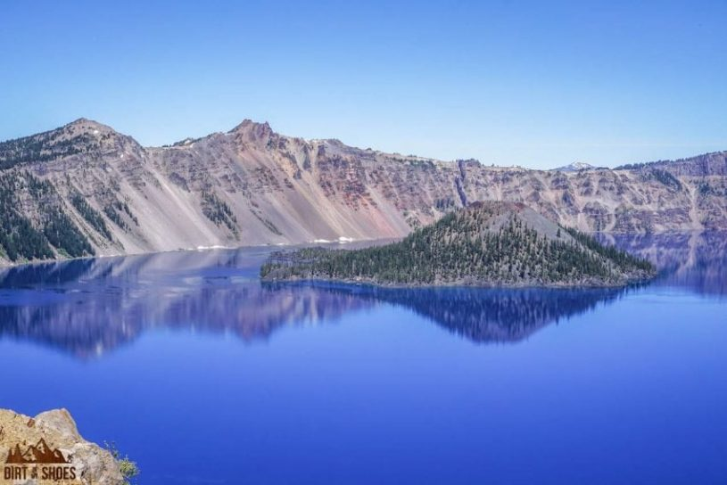
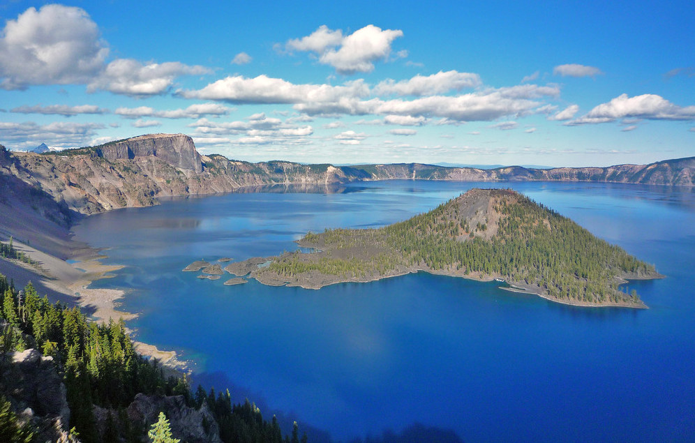
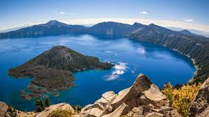
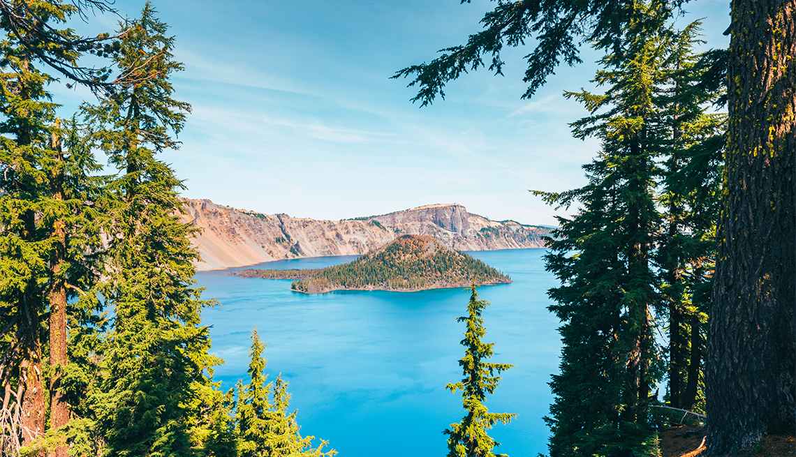

Crater Lake (Klamath: giiwas) is a crater lake in south-central Oregon in the western United States. It is the main feature of Crater Lake National Park and is famous for its deep blue color and water clarity. The lake partly fills a nearly 2,148-foot-deep (655 m) caldera that was formed around 7,700 (± 150) years ago by the collapse of the volcano Mount Mazama.
History & Nature
Mount Mazama, part of the Cascade Range volcanic arc, was built up mostly of andesite, dacite, and rhyodacite over a period of at least 400,000 years. The caldera was created in a massive volcanic eruption between 6,000 and 8,000 years ago that led to the subsidence of Mount Mazama. About 12 cubic miles (50 km3) of rhyodacite was erupted in this event. Since that time, all eruptions on Mazama have been confined to the caldera.
Things To Do
Swimming is permitted in Crater Lake, but the only way to safely and legally get to the shore is by following Cleetwood Cove trail and people can enter the water from there.[40] Other activities include fishing and a 2-hour boat tour around the lake provided by a Park Ranger from Crater Lake National Park. As the region lies within a national park area, collecting rocks within the vicinity is prohibited unless a permit is obtained. The park's facilities lie at Rim Village, at the southern edge of the caldera.
Hotels, Lodging & Camping
Each campsite has a fire ring with a grilling grate. Wood fires are allowed only in these designated rings. Never leave fires or hot coals unattended, and extinguish them completely before leaving. During high-fire danger periods, wood fires are not be permitted. Notifications will be posted in the campground. Firewood can be purchased at the Mazama Store. You may also bring firewood into the park with you, but it must be from the Pacific Northwest (Oregon, Washington, and Idaho) or labeled as "Approved Pest Free." Dead wood may also be gathered as fuel, but only in areas of the park that are below 6,900 feet (2,100 meters) in elevation. Cutting or trimming of standing trees, dead or alive, is prohibited.
Hours & Pricing
All areas of the Crater lake are only accessible via guided tour.
Location
|  |  |  |  |